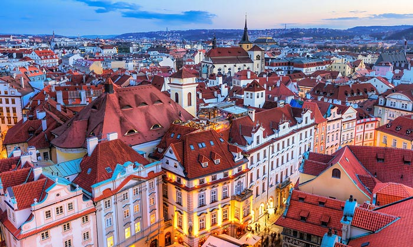

Прага — столица и крупнейший город Чехии с населением 1 222 000 человек (данные на 2010 год), а также административный центр Среднечешского края. Первые славяне на землях будущей Праги появились в V — VI столетии. В X столетиии появилось поселение Пршемышловских князей, называемое Прага. На протяжении своей долгой истории город являлся резиденцией чешских королей и был столицей Чешского государства. С 1918 года Прага — столица Чехословацкой Республики. С 1960 по 1992 год — столица ЧССР, а с января 1993 года — столица Чешской Республики. Со времен средневековья Прага считалась красивейшим городом Европы, и именовалась не иначе как «злата Прага», «город ста шпилей», «каменная мечта». На протяжении веков в Праге жили и работали многие выдающиеся личности, среди которых Моцарт, Бетховен, Достоевский, Роден, Аполлинер, Чайковский, королева Елизавета II, Ян Неруда, Ярослав Гашек, Франц Кафка. Наличие в Праге огромного количества памятников культуры способствовало тому, что в 1992 году центр Праги, занимающий площадь 866 гектаров, был занесен в список всемирного наследия ЮНЕСКО. В пражской коллекции исторических памятников имеются дворцы, замки, башни, музеи, галереи, театры, концертные залы. Прага — шестой по посещаемости Европейский город, после Лондона, Парижа, Рима, Мадрида и Берлина. Прага пострадала сравнительно меньше во время Второй Мировой Войны, чем некоторые другие большие города той области, что позволило сохранить большинство из его исторических построек в изначальном виде. В городе находятся одна из самых древних и разнообразных коллекций архитектурных стилей, от Арт-Нуво до Барокко, Ренессанса, Готики, Неоклассики и ультрасовременных стилей. Ниже мы приводим самые популярные и достойные внимания достопримечательности. По соответствующим ссылкам вы можете попасть на страницу нужного вам объекта и прочитать более подробную информацию о нем, а также просмотреть фотографии и схемы проезда. Старый Город в Праге — самое популярное туристическое место. Центром Старого Города является Староместская площадь — одна из самых красивых в Европе. Наиболее интересное здание в Старом Городе, которому следует уделить внимание — Староместская ратуша, знаменитая своими Астрономическими часами. Напротив Староместской ратуши возвышается над Старым Городом Храм Девы Марии Тынской. Строительство храма было начато в XIV веке, а закончено — только в 1511 году. С начала XV века Тынский храм выполнял функции духовного центра Старого Города, и являлся главным гуситским костелом Праги. Архитектурно храм — трехнефная базилика с башнями у западного фасада и тремя хорами, завершающими нефы на востоке. С севера на тимпане изображены сцены из жизни Христа. Собор имеет романские и раннеготические фундаменты, его готическая архитектура стилистически идеально гармонирует с отделкой в духе барокко. К примеру, великолепный барочный алтарь (один из 19-ти, имеющихся в храме) был выполнен в 1649 году художником Карелом Шкретой. А две башни в стиле барокко высотой около 80 метров появились в XVII веке на месте башен готических, уничтоженных пожаром. Еще одна достопримечательность Старого Города — расположенная на месте старинных городских воротПороховая Башня, или Пороховые ворота. Строительство сооружения в позднеготическом стиле велось в 1475–1500 годах.